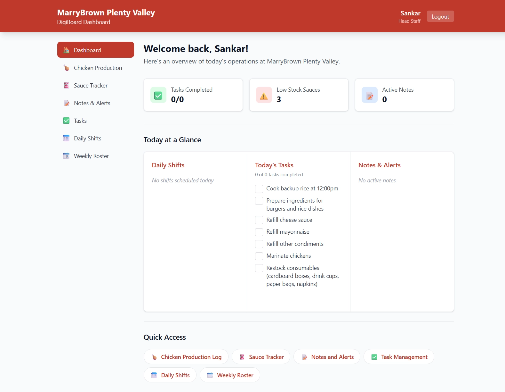
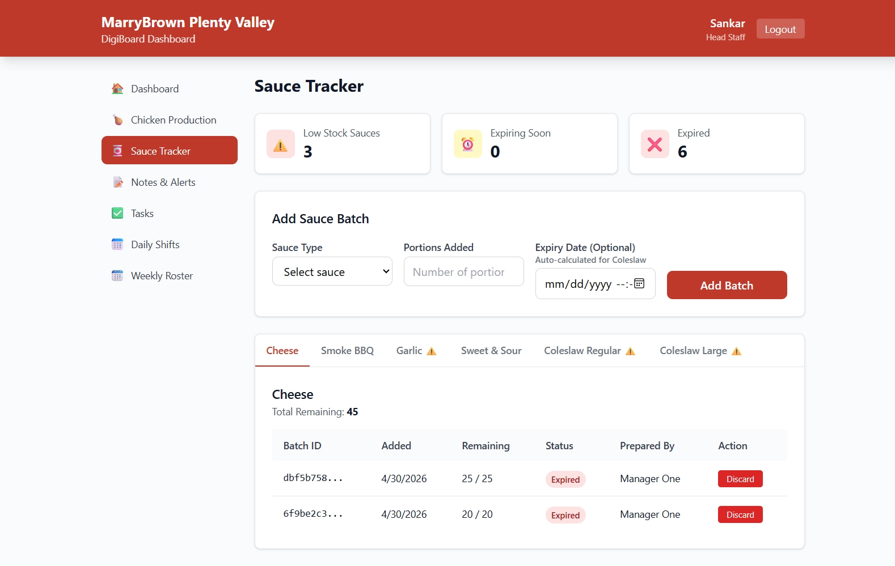
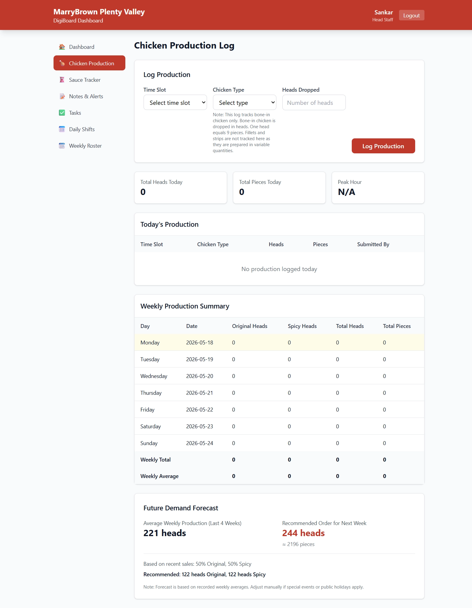

Overview
I led the development of a proposed digital operations dashboard for a Marrybrown outlet in Australia to improve kitchen coordination, inventory visibility and shift communication in a high-volume fast-food environment.
The project was designed to replace manual whiteboard-based workflows with a centralised web-based dashboard that helps staff manage daily operations in real time. The solution focused on reducing food wastage, improving first-in, first-out (FIFO) compliance and preventing stock shortages during peak hours.
Project status
Proposed solution with dashboard screens shown below. POS-driven stock availability tracking was simulated. The business benefits described in this case study are intended outcomes, rather than measured results from a live rollout.
Project highlights
- Designed a web-based digital dashboard for kitchen and shift operations.
- Introduced real-time sauce expiry tracking with colour-coded alerts.
- Developed a chicken production logging system to monitor hourly demand.
- Created a digital shift board and weekly roster system for operational transparency.
- Built a task management and alert system for team coordination.
- Simulated POS-driven stock availability tracking to monitor sauce demand.
One shared view of daily operations
The dashboard brings daily shifts, tasks, stock indicators and operational notes together, with quick access to the key kitchen workflows.

Inventory & expiry management
- Automated sauce expiry calculations.
- FIFO-based stock visibility.
- Low-stock alerts when inventory drops below threshold levels.
- Colour-coded indicators: green for safe, amber for expiring soon and red for expired.
- Simulated POS-driven availability tracking to monitor sauce demand.

Shift & team coordination
The proposed solution replaces scattered handover information with shared operational visibility.
- Live daily shift board.
- Weekly digital roster with shift swap functionality.
- Timestamped updates for accountability.
- Special notes and operational alerts visible to all staff.
- Task management to coordinate daily responsibilities.
Operational analytics
Hourly chicken production logging provides a shared view of production and supports demand forecasting and peak-hour planning.
- Chicken production logging by hour.
- Demand forecasting support.
- Real-time production visibility for peak-hour planning.

My contributions
- Project planning and stakeholder coordination.
- Requirements gathering using MoSCoW prioritisation.
- Business process analysis.
- System design and documentation.
- Risk management and quality planning.
- UI/UX workflow planning.
- Agile / Wagile project management practices.
Tools & methodologies
Intended business impact
The proposed solution aimed to:
- Reduce food wastage and operational losses.
- Improve communication between shifts.
- Prevent stock shortages during busy service periods.
- Increase operational efficiency and staff accountability.
- Enhance the customer experience through smoother kitchen operations.